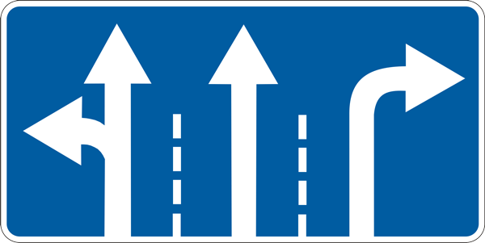
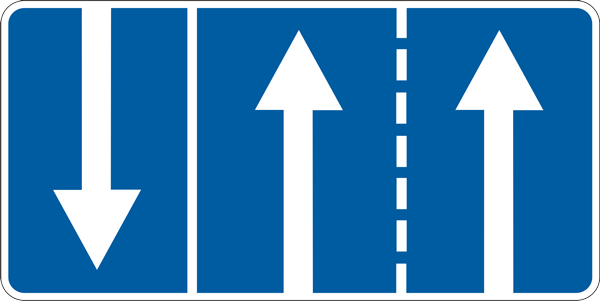
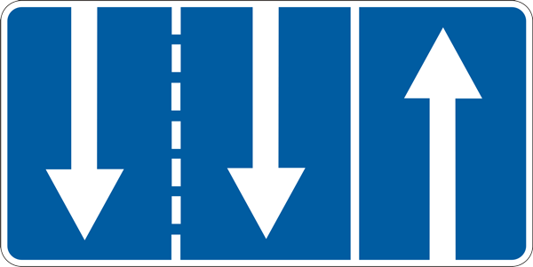
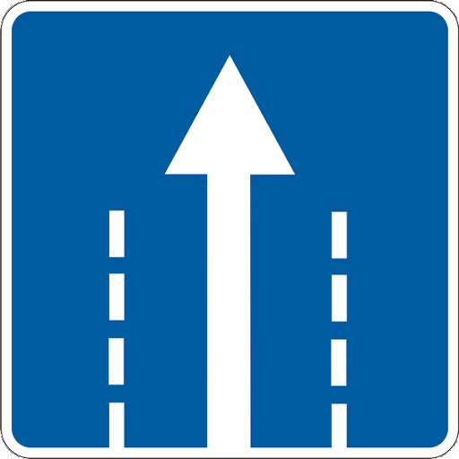
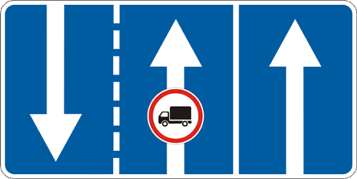
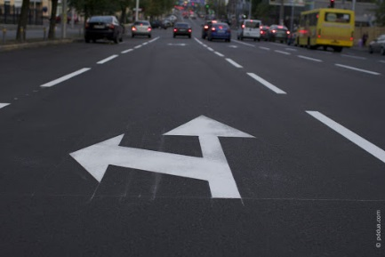

11. Розташування транспортних засобів на дорозі
11.1. Кількість смуг на проїзній частині для руху нерейкових транспортних засобів визначається дорожньою розміткою або дорожніми знаками 5.16, 5.17.1, 5.17.2, а за їх відсутності – самими водіями з урахуванням ширини проїзної частини відповідного напрямку руху, габаритів транспортних засобів і безпечних інтервалів між ними.

5.16

5.17.1

5.17.2
11.2. На дорогах, які мають дві і більше смуг для руху в одному напрямку, нерейкові транспортні засоби повинні рухатися якнайближче до правого краю проїзної частини, крім випадків, коли виконується випередження, об’їзд або перестроювання перед поворотом ліворуч чи розворотом.
11.3. На дорогах із двостороннім рухом, які мають по одній смузі для руху в кожному напрямку, за відсутності суцільної лінії дорожньої розмітки чи відповідних дорожніх знаків виїзд на смугу зустрічного руху можливий лише для обгону та об’їзду перешкоди або зупинки чи стоянки біля лівого краю проїзної частини в населених пунктах у дозволених випадках, при цьому водії зустрічного напрямку мають перевагу.
11.4. На дорогах з двостороннім рухом, які мають щонайменше дві смуги для руху в одному напрямку, забороняється виїжджати на призначений для зустрічного руху бік дороги.
11.5. На дорогах, які мають дві і більше смуги для руху в одному напрямку, виїзд на крайню ліву смугу для руху в цьому ж напрямку дозволяється, якщо праві зайняті, а також для повороту ліворуч, розвороту або для зупинки чи стоянки на лівому боці дороги з одностороннім рухом у населених пунктах, коли це не суперечить правилам зупинки (стоянки).
11.6. На дорогах, які мають три і більше смуги для руху в одному напрямку, вантажним автомобілям з дозволеною максимальною масою понад 3,5 т, тракторам, самохідним машинам і механізмам дозволяється виїжджати на крайню ліву смугу лише для повороту ліворуч та розвороту, а у населених пунктах на дорогах з одностороннім рухом, крім цього, – для зупинки зліва, в дозволених випадках, з метою завантаження чи розвантаження.
11.7. Транспортні засоби, швидкість руху яких не повинна перевищувати 40 км/год або які з технічних причин не можуть розвивати таку швидкість, повинні рухатися якнайближче до правого краю проїзної частини, крім випадків, коли виконується обгін, об’їзд або перестроювання перед поворотом ліворуч чи розворотом.
11.8. По трамвайній колії попутного напрямку, розташованій на одному рівні з проїзною частиною для нерейкових транспортних засобів, дозволяється рух за умови, що це не заборонено дорожніми знаками чи дорожньою розміткою, а також під час випередження, об’їзду, коли ширина проїзної частини недостатня для виконання об’їзду, без виїзду на трамвайну колію.
На перехресті дозволяється виїжджати на трамвайну колію попутного напрямку в тих самих випадках, але за умови відсутності перед перехрестям дорожніх знаків 5.16-5.19.
5.16
5.17.1
5.17.2

5.18

5.19
Поворот ліворуч або розворот повинні виконуватися з трамвайної колії попутного напрямку, розташованої на одному рівні з проїзною частиною для нерейкових транспортних засобів, якщо інший порядок руху не передбачено дорожніми знаками 5.16, 5.18 або розміткою 1.18.
5.16
5.18

1.18.
В усіх випадках не повинно створюватися перешкод для руху трамвая.
11.9. Забороняється виїжджати на трамвайну колію зустрічного напрямку, відокремлені від проїзної частини трамвайні колії та розділювальну смугу.
11.10. На дорогах, проїзна частина яких поділена на смуги руху лініями дорожньої розмітки, забороняється рухатися, займаючи одночасно дві смуги. Наїжджати на переривчасті лінії розмітки дозволяється лише під час перестроювання.
11.11. При інтенсивному русі змінювати смугу дозволяється лише для об’їзду перешкоди, повороту, розвороту або зупинки.
11.12. Водій, який здійснює поворот на дорогу, що має смугу для реверсивного руху, може перестроюватися на неї тільки після проїзду реверсивного світлофора з сигналом, що дозволяє рух, і якщо це не суперечить пунктам 11.2, 11.5 та 11.6 цих Правил.
11.13. Забороняється рух транспортних засобів по тротуарах і пішохідних доріжках, крім випадків, коли вони застосовуються для виконання робіт або обслуговування торговельних та інших підприємств, розташованих безпосередньо біля цих тротуарів або доріжок, за відсутності інших під’їздів і за умови виконання вимог пунктів 26.1-26.3 цих Правил.
11.14. Рух по проїзній частині на велосипедах, мопедах, гужових возах (санях) і вершникам дозволяється лише в один ряд по правій крайній смузі якомога правіше, за винятком випадків, коли виконується об’їзд. Поворот ліворуч та розворот дозволяється на дорогах з однією смугою для руху в кожному напрямку і без трамвайної колії посередині. Дозволяється рух по узбіччю, якщо це не створить перешкод пішоходам.